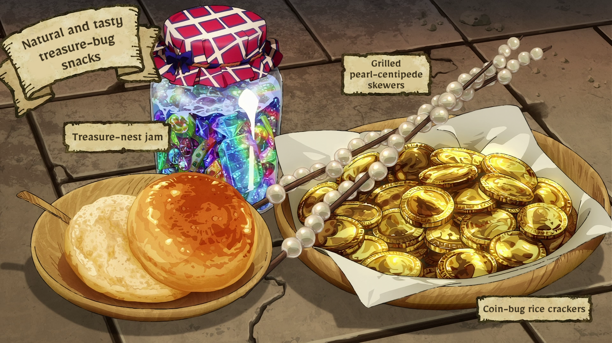

A group of delicious snacks made entirely of different types of Treasure Insects.
Ingredients:
- Treasure insect nest
- Water (50 ml)
- Sugar (if needed)
Treasure Insect Jam:
- Coin bugs (as many as needed)
- Oil (to taste)
- Salt (to taste)
Coin Bug Crackers:
- Pearl centipedes (2)
- Salt (to taste)
Pearl Centipide Skewers:
How to cook:
- Remove the eggs and larvae.
- Shatter the tiara (nest) and stew together.
- Put them in a jar.
- Heat some oil and cook the underside of the coin bugs.
- Salt them lightly.
- Coat them with oil as you stir them.
- It looks nice if you flip them with their backs facing up.
- Remove the legs from the pearl centipides.
- Skewer and grill them.